======================================================================
在这个大数据时代，网络爬虫是获取数据的利器，利用爬虫技术可以做很多有趣有用的事情。本专栏将推出一系列文章通过原创实例分享爬虫开发的基础技术。
爬虫系列：用爬虫抓取昆仑决所有选手信息并保存为PDF档案！（浅谈搏击运动数据分析） - 知乎专栏
同时，还有微信的Python接口itchat系列：
用微信控制深度学习训练：中国特色的keras插件 - 知乎专栏======================================================================
在上一期，我们尝试了使用爬虫爬取搏击运动员的资料并保存为本地PDF文档，采集的数据以静态的文本和图片为主，网站结构也比较简单。
在本期，我们将尝试爬取一个视频网站，收集视频的链接及详细信息。
我们建立一个针对该网站的爬虫库，以面向对象的风格将网站抽象成了一个class，封装了一些方法以供更多的扩展开发使用。
通过收集这些信息，我们可以制作一个图文图文匹配、视频推荐的机器学习数据集，用于人工智能鉴黄。
最后，我们通过itchat库来实现一个私人微信客户端。
声明：本文以技术交流为目的，所有敏感图片已做打码处理，请根据所在地相关法律法规访问某些网页链接。源码遵守GPL3.0协议，但敬告切勿使用在非法的商业、个人其他意图中。若使用不当，均由个人承担责任。
成品展示：
服务端为aws ec2实例
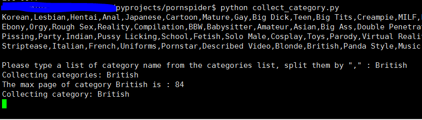
收集类别下所有视频
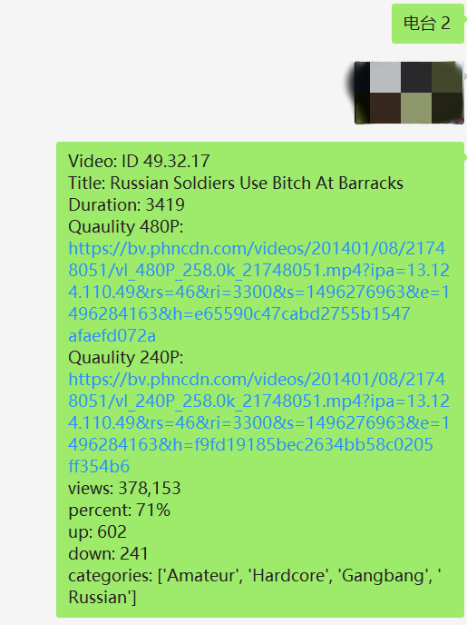
众所周知，鉴黄师这个工作十分辛苦，要看片看到吐，甚至可能造成功能障碍。
人工智能鉴黄技术是现今热点，奈何由于任务的不可描述性，数据集难求，入门很难。所有我想到了能不能通过爬虫构筑一个数据集呢？
于是才有了这个项目（呵呵）
Pornhub维基百科 ，Free Porn Videos & Sex Movies
Pornhub是一个加拿大的色情影片分享网站。它是目前网上最大的色情影片网站，服务分享遍及全球。[2] Pornhub于2007年在魁北克省蒙特利尔市成立。它是一个免费的，由广告支持的网站。除了专业色情内容，网站也提供业余色情内容。Pornhub在英国伦敦市，美国加利福尼亚州旧金山市，美国得克萨斯州休斯敦市以及美国路易斯安那州新奥尔良市均有分部和服务器。 2010年3月Pornhub被MindGeek购买，MindGeek同时拥有许多其他的色情网站。[3]
在一个视频网站浏览视频，最主要的依据一般是类别。
在pornhub主页下，我们发现了所有类别的索引网页Categories。进入这个网页，所有类别都由一个封面图片和类别（category）名称表示。
（严严实实的打码）
每个类别的链接后本类别的所有视频的摘要列表页。
每一个视频摘要则是视频详情页的入口，视频详情页可以播放视频，有视频的时长、评分等信息，正是我们想采集的主要对象。
于是，我们得到了大致的网站结构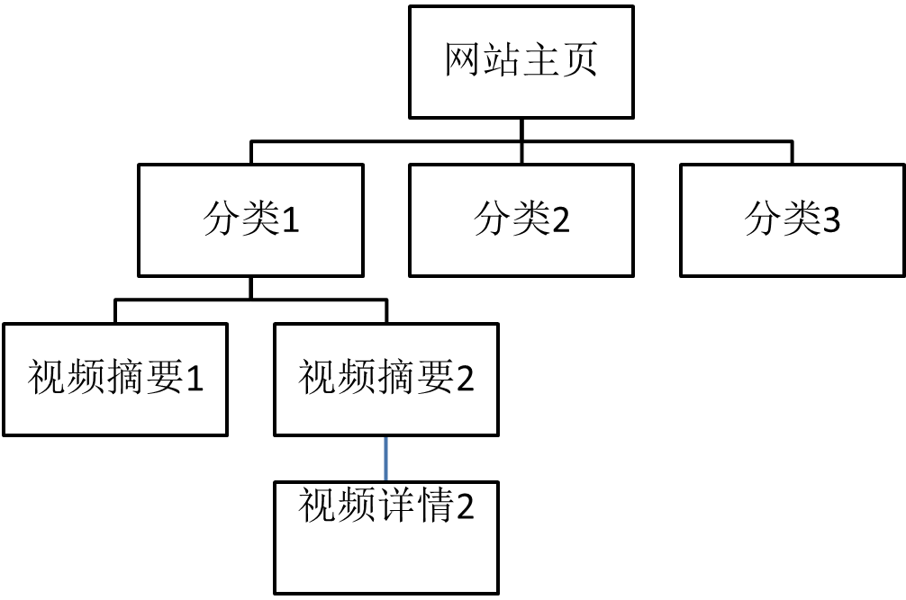
网络爬虫的核心技术就是正则表达式，这一步骤也是爬虫技术的难点与重点。
我们根据网站结构，先进入类别列表页面。
在其中一个类别上使用“审查元素”查看源码：
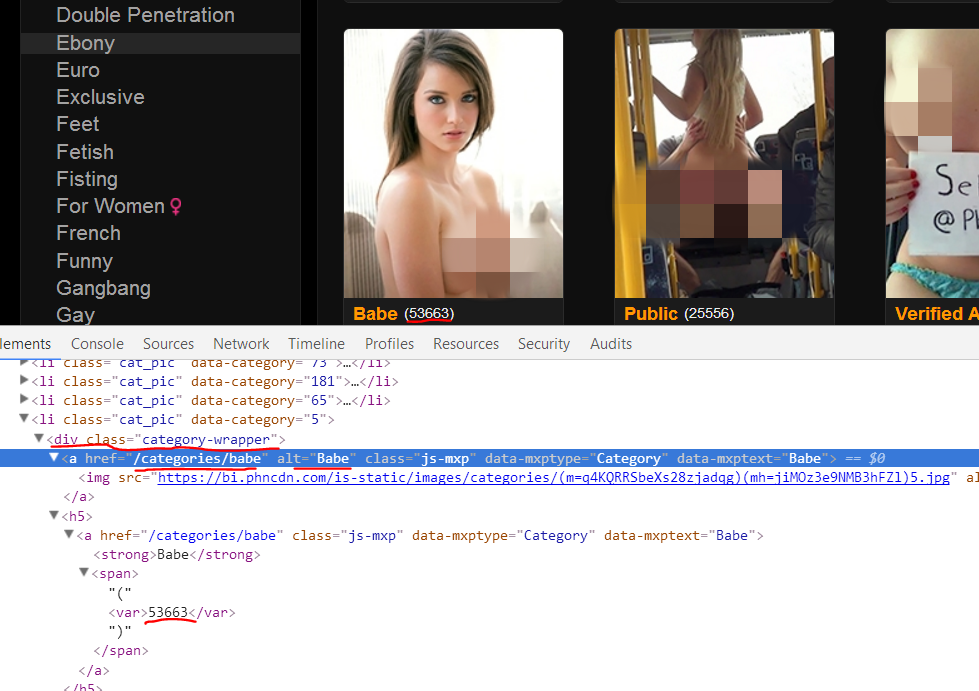可以，每个类别以<div class="category-wrapper">开头。每个类别的入口链接和类别名称分别在第二第三红线处。还有一个数字（第四条红线）是本类别下有多少视频（并不准）。
于是我们可以得到每个类别的入口链接、名称以及视频数量信息的正则表达式。
r_class=r'<div class="category-wrapper">\n\t\t\t\t\t\t<a href=".*?" alt="(.*?)" class="js-mxp"'
r_url=r'<div class="category-wrapper">\n\t\t\t\t\t\t<a href="(.*?)" alt=".*?" class="js-mxp"'
r_num=r'<span>.<var>(\d*?)</var>.</span></a>'
经过研究，我们并没有发现网页有显性给出最大页数。而且翻页是有“跳步”的，在页数很大以后翻页按钮间页数间隔也会变大。
所以我们想用倒序的方法，先得到最大页数的正则，从一个估计的最大页数上限递减页数访问，匹配返回的文本有没有翻页按钮，若有即为最大页数，若无则continue，以此得到最大页数。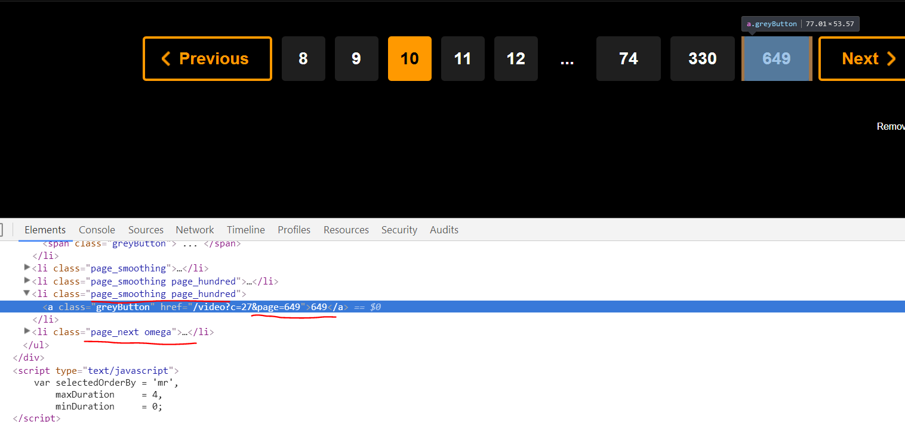
我们通过之前得到的本类别总视频数和每个页面视频数来估算页数上限，这一部分代码如下：
def max_page(self):
try:
headers={'use-agent':"Mozilla/5.0 (Windows NT 10.0; WOW64) AppleWebKit/537.36 (KHTML, like Gecko) Chrome/50.0.2661.102 Safari/537.36"}
page=int(self.num_video/44)
r_max=r'<li class="page_smoothing.*?<a class="greyButton" href=".*?">(.*?)</a></li>[\s\t\n]*?<li class="page_next'
result=[]
t=0
while not (bool(result) or t>10):
page-=50
page=max(page,1)
params={'page':(page)}
html_text=requests.get(self.url,headers=headers,params=params).text
result=re.findall(r_max,html_text)
t+=1
if not result:
page=1
t=0
while not (bool(result) or t>10):
params={'page':(page)}
html_text=requests.get(self.url,headers=headers,params=params).text
result=re.findall(r_max,html_text)
page+=15
t+=1
max_page=(int(result[0]) if result else 1)
print('The max page of category '+self.name+' is :',max_page)
except ConnectionError:
max_page=1
traceback.print_exc()
print('Got connection error, return 1 for default.')
return max_page
接下来我们分析每个视频摘要的元素，发现除了我们要的本类别视频，还有一些在浏览器隐藏但是会体现在源码里的推荐视频，正则和目标视频基本一致，于是我们首先要进行过滤。
可以看到，正文视频都被包裹在<ul class="nf-videos videos search-video-thumbs">这样一个类似于block的结构里面。所以我们要截取HTML文本。
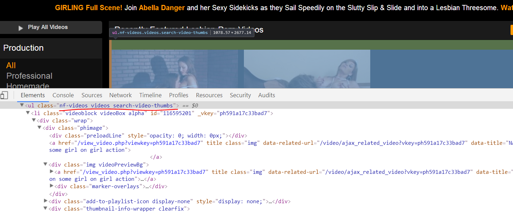得到视频摘要元素入口URL、标题、.jpg封面地址的正则。
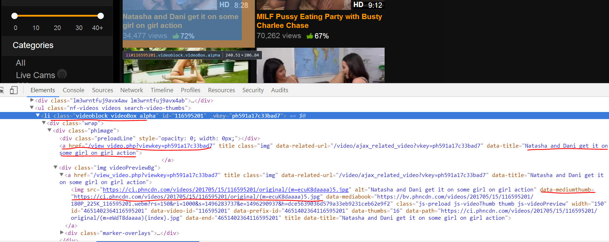r_u=r'<li class="videoblock videoBox[\s\S]*?\t<a href="(.*?)" title=".*?" class="img"'
r_t=r'<li class="videoblock videoBox[\s\S]*?\t<a href=".*?" title="(.*?)" class="img"'
r_c=r'\tdata-mediumthumb="(.*?)"\n'
我们将根据所在类别分页的URL作为参数，把抓取本页面摘要视频元素的过程写成一个函数。
def get_videoadd(url='',page=0,category_id=0):
#从视频列表网页抓取视频名称、封面和播放页的地址
#Getting name,cover,and the url of play page of the video from a list page.
r_u=r'<li class="videoblock videoBox[\s\S]*?\t<a href="(.*?)" title=".*?" class="img"'
r_t=r'<li class="videoblock videoBox[\s\S]*?\t<a href=".*?" title="(.*?)" class="img"'
r_c=r'\tdata-mediumthumb="(.*?)"\n'
headers={'use-agent':"Mozilla/5.0 (Windows NT 10.0; WOW64) AppleWebKit/537.36 (KHTML, like Gecko) Chrome/50.0.2661.102 Safari/537.36"}
t=requests.get(url,params={'page':page},headers=headers).text
t_body=t[t.find('<ul class="nf-videos videos search-video-thumbs">'):]
t_l=re.findall(r_t,t_body)
return [(title,add,cover,'.'.join([str(category_id),str(page),str(ID+1)])) for title,add,cover,ID in zip(t_l,re.findall(r_u,t_body),re.findall(r_c,t_body),range(len(t_l)))]
接下来我们进入视频详情页。
一个视频对象最核心的内容当然是视频文件本身啦！所以我们先使用“搜索”功能搜索‘.mp4’。我们看到，pornhub的视频播放是可以选择质量的，而每个质量的视频的链接都已经给出。
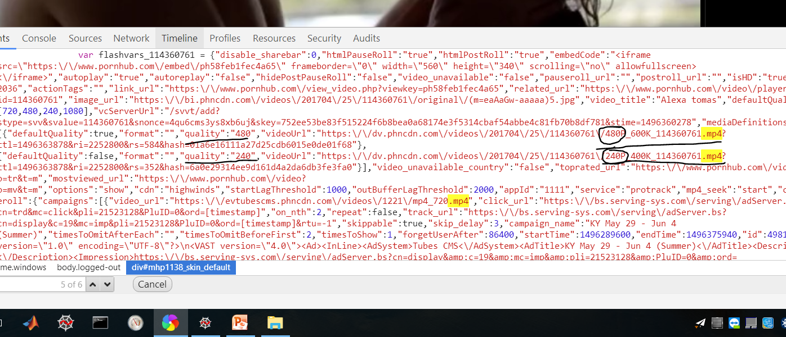回想一下平时浏览视频的重要指标：评分、浏览数、时长.....我们还需要这些信息。
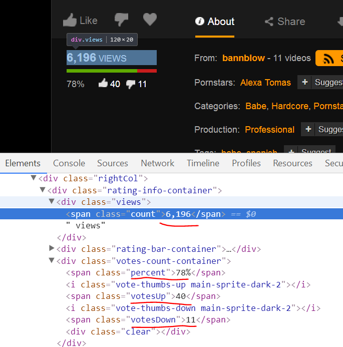根据以上，编写获取MP4文件链接和其他信息的函数：
def get_video(videopage):
#从播放页抓取视频详情，返回一个图片来了包括不同质量的MP4文件地址的一个字典，时长(秒)，一个包含浏览数、赞/踩比率和数量以及所属分类的字典。可单独使用。
#Crawling detail of the video, return a tuple which has a dict of MP4 file's address of different qualities, the duration(second),a dict contains number of views, the rate and number of votes Up/Down.
headers={'use-agent':"Mozilla/5.0 (Windows NT 10.0; WOW64) AppleWebKit/537.36 (KHTML, like Gecko) Chrome/50.0.2661.102 Safari/537.36"}
r_v=r'"quality":".*?","videoUrl":"(.*?)"}'
r_quality=r'quality":"(\d*?)","videoUrl":".*?"}'
r_duration=r'"video_duration":"(\d.*?)"'
r_view=r'<div class="views"><span class="count">(.*?)</span>'
r_percent=r'<span class="percent">(.*?)</span>'
r_up=r'<span class="votesUp">(.*?)</span>'
r_down=r'<span class="votesDown">(.*?)</span>'
r_cate=r'<a href="/video.*?" onclick="ga.*?;">(.*?)</a>'
html_text=requests.get('https://www.pornhub.com'+videopage,headers=headers).text
l_v=list(map(lambda x:x.replace('\\',''),re.findall(r_v,html_text)))
l_q=re.findall(r_quality,html_text)
add={q:v for q,v in zip(l_q,l_v)}
duration=int(re.findall(r_duration,html_text)[0])
info={'views':re.findall(r_view,html_text)[0],'percent':re.findall(r_percent,html_text)[0],'up':re.findall(r_up,html_text)[0],'down':re.findall(r_down,html_text)[0],'categories':re.findall(r_cate,html_text)}
return (add,duration,info)
OK，至此，网页结构分析和分析核心正则表达式的工作打印机完成，接下来我们要构建一个完整的爬虫。
爬虫是用来爬取网页上的“对象”的，那么我们理所当然的应该使用面向对象的风格来抽象我们的爬取行为。
还是这张图，根据网站结构，网站可分为三级：站（site）、类别（category）、视频（video）。站里包含一系列category，每个category包含一系列的video。
所以我决定用三个类来抽象这三个级别：
class site():
pass
class category():
pass
class video():
pass
当我们使用爬虫时，先实例化一个site对象，这个对象有一系列的方法和一个category对象的列表（词典），我们在这个层次对category进行批量处理；在每个category对象里又有一系列方法和video对象，我们在这个层次批量处理video。
大家可能会注意到，之前几个函数的返回值都是tuple类型，之所以这样做是为了使用multiprocessing进行并行批处理时方便使用pool.apply_async()函数。
我尽量不使用第三方库，只使用了requests这个神库。
以下是本爬虫库的完整代码：
# -*- coding: utf-8 -*-
"""
Created on Mon May 22 21:56:43 2017
@author: Quantum Liu
"""
import re
import requests
from multiprocessing import Pool,cpu_count,freeze_support
import traceback
import time
from PIL import Image
import pickle
import os
class site():
#对于pornhub全站的抽象，拥有多个视频类别（categories）;
#An abstraction of pornhub website,has a list of categories and videos.
def __init__(self):
self.category_params,self.category_name_list=list_categories()
self.category_dict={}.fromkeys(self.category_name_list)
print('There are '+str(len(self.category_name_list))+' categories.\n',self.category_name_list)
self.video_list={}
self.id2title_dict={}
self.category_id=1
self.title2id_dict={}
def init_category(self,name_list=[''],num_category=0):
if num_category and name_list:
name_list=name_list[:min(num_category,len(name_list)-1)]
elif not name_list and num_category:
name_list=self.category_list[:min(num_category,len(self.category_list))]
clist=init_categories_p(self.category_params,(name_list if name_list else self.category_name_list))
for c in clist:
self.category_dict[c.name]=c
return self
def iterate_videos(self,category_name='',num_page=0,start_page=1,iterate_all=False):
for v in self.category_dict[category_name].iterate_videos_p(num_page,start_page,iterate_all):
self.video_list[v.video_id]=v
self.title2id_dict[v.title]=v.video_id
self.id2title_dict[v.video_id]=v.title
return self
#==============================================================================
#
#==============================================================================
class category():
#对于视频分类(category)的抽象，拥有一系列视频
#An abstration of "categories", has a list of viseos
def __init__(self,name='',url='',num_video=0,category_id=1):
self.name=name
self.url=url
self.num_video=num_video
self.max_page=self.max_page()
self.videos=[]
self.category_id=category_id
def max_page(self):
try:
headers={'use-agent':"Mozilla/5.0 (Windows NT 10.0; WOW64) AppleWebKit/537.36 (KHTML, like Gecko) Chrome/50.0.2661.102 Safari/537.36"}
page=int(self.num_video/44)
r_max=r'<li class="page_smoothing.*?<a class="greyButton" href=".*?">(.*?)</a></li>[\s\t\n]*?<li class="page_next'
result=[]
t=0
while not (bool(result) or t>10):
page-=50
page=max(page,1)
params={'page':(page)}
html_text=requests.get(self.url,headers=headers,params=params).text
result=re.findall(r_max,html_text)
t+=1
if not result:
page=1
t=0
while not (bool(result) or t>10):
params={'page':(page)}
html_text=requests.get(self.url,headers=headers,params=params).text
result=re.findall(r_max,html_text)
page+=15
t+=1
max_page=(int(result[0]) if result else 1)
print('The max page of category '+self.name+' is :',max_page)
except ConnectionError:
max_page=1
traceback.print_exc()
print('Got connection error, return 1 for default.')
return max_page
def iterate_videos_p(self,num_page=0,start_page=1,iterate_all=False):
start_page=max(start_page,1)
freeze_support()
pool=Pool(cpu_count())
param_results=[]
for p in range(start_page,((start_page+num_page if num_page else max(start_page+100,self.max_page)) if not iterate_all else self.max_page)):
param_results.append(pool.apply_async(get_videoadd,(self.url,p,self.category_id)))
pool.close()
pool.join()
pool=Pool(cpu_count())
video_results=[]
for params in [p for l in [result.get() for result in param_results] for p in l]:
video_results.append(pool.apply_async(video,params))
pool.close()
pool.join()
self.videos+=[result.get() for result in video_results]
return self.videos
#==============================================================================
#
#==============================================================================
class video():
#对视频的抽象，属性包括所在网页、封面、不同质量MP4文件的链接，时长，评价，所属分类
#An abstraction of video, attributes contain the web page, .MP4 files' urls of different qualities, duration, grade, categories
def __init__(self,title='',page='',cover='',video_id=''):
self.page=page
self.cover=cover
self.title=title
self.video_id=video_id
print('Crawling video:'+title)
self.mp4add,self.duration,self.info='',0,''
def update(self):
try:
self.mp4add,self.duration,self.info=get_video(self.page)
except:
self.mp4add,self.duration,self.info='',0,''
print('Got error, failed instantiating viedo: '+self.title)
traceback.print_exc()
return self
def show_info(self,pic_dir='',show_pic=False):
#显示视频信息和封面图片
#Show infomations and the cover oicture of the video
if show_pic:
headers={'use-agent':"Mozilla/5.0 (Windows NT 10.0; WOW64) AppleWebKit/537.36 (KHTML, like Gecko) Chrome/50.0.2661.102 Safari/537.36"}
if not pic_dir:
self.pic_dir='./'+self.info['categories'][0]
else:
self.pic_dir=pic_dir
if not os.path.exists(self.pic_dir):
os.mkdir(self.pic_dir)
self.pic_path=self.pic_dir+'/'+self.title+'.jpg'
with open(self.pic_path,'wb') as f:
f.write(requests.get(self.cover,headers=headers).content)
with Image.open(self.pic_path) as img:
img.show()
print('Video: ID '+self.video_id+' '+self.title,self.mp4add,self.info)
#==============================================================================
#
#==============================================================================
def list_categories(root='https://www.pornhub.com'):
#列举Pornhub所有的视频分类，返回一个键名为类名的字典和一个属于类名的list，字典的值是tuple，包含入口URL，视频数，赋予的ID
#Enumerate all categories of PornHub,return a dictionary whose keys are names of categories and a list of categories names, the values of the dics is a tuple,contain entrance url, number of videos, a given ID
headers={'use-agent':"Mozilla/5.0 (Windows NT 10.0; WOW64) AppleWebKit/537.36 (KHTML, like Gecko) Chrome/50.0.2661.102 Safari/537.36"}
cate_root=root+'/categories'
r_class=r'<div class="category-wrapper">\n\t\t\t\t\t\t<a href=".*?" alt="(.*?)" class="js-mxp"'
r_url=r'<div class="category-wrapper">\n\t\t\t\t\t\t<a href="(.*?)" alt=".*?" class="js-mxp"'
r_num=r'<span>.<var>(\d*?)</var>.</span></a>'
res=requests.get(cate_root,headers=headers)
html_text=res.text
class_list=re.findall(r_class,html_text)
url_list=re.findall(r_url,html_text)
num_list=re.findall(r_num,html_text)
category_params={c:(root+u,int(n),ID+1) for c,u,n,ID in zip(class_list,url_list,num_list,range(len(class_list)))}
return category_params,class_list
def init_categories_p(category_params={},name_list=['']):
#实例化category的并行实现
#A parallel implemention of instantiating categories
freeze_support()
pool=Pool(cpu_count())
results=[]
for name in name_list:
results.append(pool.apply_async(category,(name,)+category_params.get(name)))
pool.close()
pool.join()
return [result.get() for result in results]
def init_categories_s(category_params={},name_list=['']):
return [category(*(name,)+category_params.get(name)) for name in name_list]
def get_videoadd(url='',page=0,category_id=0):
#从视频列表网页抓取视频名称、封面和播放页的地址
#Getting name,cover,and the url of play page of the video from a list page.
r_u=r'<li class="videoblock videoBox[\s\S]*?\t<a href="(.*?)" title=".*?" class="img"'
r_t=r'<li class="videoblock videoBox[\s\S]*?\t<a href=".*?" title="(.*?)" class="img"'
r_c=r'\tdata-mediumthumb="(.*?)"\n'
headers={'use-agent':"Mozilla/5.0 (Windows NT 10.0; WOW64) AppleWebKit/537.36 (KHTML, like Gecko) Chrome/50.0.2661.102 Safari/537.36"}
t=requests.get(url,params={'page':page},headers=headers).text
t_body=t[t.find('<ul class="nf-videos videos search-video-thumbs">'):]
t_l=re.findall(r_t,t_body)
return [(title,add,cover,'.'.join([str(category_id),str(page),str(ID+1)])) for title,add,cover,ID in zip(t_l,re.findall(r_u,t_body),re.findall(r_c,t_body),range(len(t_l)))]
def get_video(videopage):
#从播放页抓取视频详情，返回一个图片来了包括不同质量的MP4文件地址的一个字典，时长(秒)，一个包含浏览数、赞/踩比率和数量以及所属分类的字典。可单独使用。
#Crawling detail of the video, return a tuple which has a dict of MP4 file's address of different qualities, the duration(second),a dict contains number of views, the rate and number of votes Up/Down.
headers={'use-agent':"Mozilla/5.0 (Windows NT 10.0; WOW64) AppleWebKit/537.36 (KHTML, like Gecko) Chrome/50.0.2661.102 Safari/537.36"}
r_v=r'"quality":".*?","videoUrl":"(.*?)"}'
r_quality=r'quality":"(\d*?)","videoUrl":".*?"}'
r_duration=r'"video_duration":"(\d.*?)"'
r_view=r'<div class="views"><span class="count">(.*?)</span>'
r_percent=r'<span class="percent">(.*?)</span>'
r_up=r'<span class="votesUp">(.*?)</span>'
r_down=r'<span class="votesDown">(.*?)</span>'
r_cate=r'<a href="/video.*?" onclick="ga.*?;">(.*?)</a>'
html_text=requests.get('https://www.pornhub.com'+videopage,headers=headers).text
l_v=list(map(lambda x:x.replace('\\',''),re.findall(r_v,html_text)))
l_q=re.findall(r_quality,html_text)
add={q:v for q,v in zip(l_q,l_v)}
duration=int(re.findall(r_duration,html_text)[0])
info={'views':re.findall(r_view,html_text)[0],'percent':re.findall(r_percent,html_text)[0],'up':re.findall(r_up,html_text)[0],'down':re.findall(r_down,html_text)[0],'categories':re.findall(r_cate,html_text)}
return (add,duration,info)
有了爬虫库，我们当然是要用它来爬取网站内容了。
首先我们要实例化一个site对象并实例化一系列的category。
我写了一个脚本，作为一个console程序运行，根据用户输入来收集指定的类别
# -*- coding: utf-8 -*-
"""
Created on Sun May 28 09:51:46 2017
@author: Quantum Liu
"""
from pornspider import *
try:
with open('pornhub.pkl','rb')as f:
pornhub=pickle.load(f)
except:
pornhub=site()
st=time.time()
n=0
try:
name_list=input(','.join(pornhub.category_name_list)+'\n\nPlease type a list of category name from the categories list, split them by "," : ').split(',')
except:
name_list=pornhub.category_name_list[:1]
print('Collecting categories: '+','.join(name_list))
pornhub.init_category(name_list=name_list)
for name in name_list:
print('Collecting category: '+name)
pornhub.iterate_videos(category_name=name,num_page=5,start_page=1,iterate_all=True)
n+=len(pornhub.category_dict[name].videos)
print('Number of videos :',n,'Average time costing : '+str(n/(time.time()-st))+'page/s')
with open('pornhub.pkl','wb')as f:
pickle.dump(pornhub,f)
在ec2上运行效果：
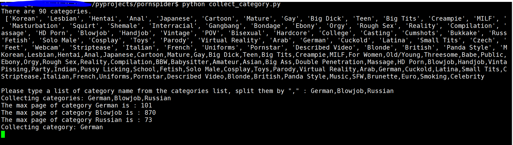 在这个程序跑完后我们就有了一个有内容的pornhub局部内容的本地映像，作为一个site对象被储存在一个.pkl文件里。
在这个程序跑完后我们就有了一个有内容的pornhub局部内容的本地映像，作为一个site对象被储存在一个.pkl文件里。
我们不妨再写一个抓取全部类别的自动脚步：
# -*- coding: utf-8 -*-
"""
Created on Sun May 28 09:51:46 2017
@author: Quantum Liu
"""
from pornspider import *
try:
with open('pornhub.pkl','rb')as f:
pornhub=pickle.load(f)
except:
pornhub=site()
st=time.time()
n=0
pornhub.init_category(name_list=pornhub.category_name_list)
for name in pornhub.category_name_list:
print('Collecting category: '+name)
pornhub.iterate_videos(category_name=name,num_page=5,start_page=1,iterate_all=True)
n+=len(pornhub.category_dict[name].videos)
print('Number of videos :',n,'Average time costing : '+str(n/(time.time()-st))+'page/s')
with open('pornhub.pkl','wb')as f:
pickle.dump(pornhub,f)
这个脚本跑完后，我们就可以得到pornhub整个网站核心内容的本地映像。
交互模式执行以下代码，来查看某一视频的详情（包括视频地址、封面、评价等）：
import pickle
with open('pornhub.pkl','rb')as f:
pornhub=pickle.load(f)
v=pornhub.video_list['22.127.27']
v.update()
v.show_info('',True)
效果：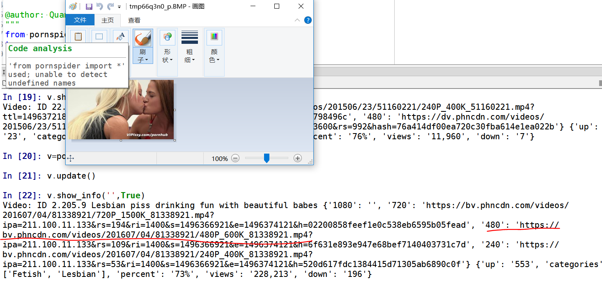
使用迅雷尝试下载整个链接
可以下载而且速度非常快，接近1/2最大下载速度。ヽ(ﾟ∀ﾟ)ﾒ(ﾟ∀ﾟ)ﾉ
OK，至此，我们已经实现了基本的对爬虫库的使用，实现了基本的数据采集功能和视频下载功能！
遥想司机当年，辛辛苦苦的追踪一个个不停更换域名的网站，一直在梦想要是有一天动动手指就有开不完的车。。。
这个，所以，输入有了服务端的爬虫程序，但是如果能用移动设备随时随地来收集数据那岂不是方便了很多吗？（嘴角挂着和善的笑容.jpg）
itchat库我也是用的多了，每次开发Python程序有使用移动设备访问的需求时都是选择它。
建立一个微信客户端的基本思路就是抽象化一个会话（session）类，代表微信交互，初始化时登录微信并实例化（本地加载或者重新实例化）一个site对象；注册特定指令，按照微信发送的文本消息对应到类的方法执行操作。
同时，我们需要一个独特的错误处理机制，把常用的traceback.print_exc()改为send_text(traceback.format_exc()),以实现使用微信接收报错信息。
代码：
# -*- coding: utf-8 -*-
"""
Created on Mon May 29 20:42:42 2017
@author: Quantum Liu
"""
from pornspider import *
import itchat
import random
import platform
pv=int(platform.python_version()[0])
from itchat.content import TEXT
if pv>2:
import _thread as th
else:
import thread as th
import os
from os import system
import re
import traceback
import platform
from requests.exceptions import ConnectionError
#==============================================================================
#==============================================================================
# A log in function call it at first
#函数，需要首先调用
#==============================================================================
def login():
if 'Windows' in platform.system():
itchat.auto_login(enableCmdQR=1,hotReload=True)#
else:
itchat.auto_login(enableCmdQR=2,hotReload=True)#
itchat.dump_login_status()#dump
#==============================================================================
#
#==============================================================================
def send_text(text):
#send text msgs to 'filehelper'
#给文件助手发送文本信息
try:
itchat.send_msg(msg=text,toUserName='filehelper')
return
except (ConnectionError,NotImplementedError,KeyError):
traceback.print_exc()
print('\nConection error,failed to send the message!\n')
return
else:
return
def send_img(filename):
#send text imgs to 'filehelper'
#给文件助手发送
try:
itchat.send_image(filename,toUserName='filehelper')
return
except (ConnectionError,NotImplementedError,KeyError):
traceback.print_exc()
print('\nConection error,failed to send the figure!\n')
return
else:
return
class wechat_session():
def __init__(self):
#初始化一个微信会话，登录并加载/实例化pornhub对象
#Initializing a wechat session,log in and load/instante a pornhub object
login()
print('Loged in successfully!\n')
send_text('Loged in successfully!\n')
try:
with open('pornhub.pkl','rb')as f:
self.pornhub=pickle.load(f)
except:
send_text('Failed loading local pickle file, initing pornhub object...\n')
self.pornhub=site()
self.registe()
self.run()
def radio(self,n=1):
#电台功能，随机推送指定数目，如：电台 2
[self.show_video_detail(video_id=v.video_id,show_pic=True) for v in[self.pornhub.video_list[k] for k in(random.sample(list(self.pornhub.video_list),n))]]
return
def collect(self,name_list=' , '):
#收集指定类别，如：收集[Russian,German]
try:
name_list=name_list.split(',')
except:
name_list=self.pornhub.category_name_list[:1]
send_text('Collecting categories: '+','.join(name_list))
self.pornhub.init_category(name_list=name_list)
n=0
st=time.time()
for name in name_list:
send_text('Collecting category: '+name)
self.pornhub.iterate_videos(category_name=name,num_page=5,start_page=1,iterate_all=True)
n+=len(self.pornhub.category_dict[name].videos)
send_text('Number of videos : '+str(n)+' Average time cost : '+str(n/(time.time()-st))+'page/s')
return
def list_all_categories(self,root='https://www.pornhub.com'):
#查看全站的类别列表，发送到微信
send_text(','.join(self.pornhub.category_name_list))
return
def list_local_categories(self):
#查看本地的类别列表，发送到微信
local_name_list=[k for k in self.pornhub.category_name_list if self.pornhub.category_dict.get(k,False)]
send_text('There are '+str(len(local_name_list))+' categories.\n'+','.join(local_name_list))
return
def broswe_category(self,name='',num=5,start=0):
#浏览某一类别，[]内是类别名称，{}是开始页数，（）内是跨度
local_name_list=[k for k in self.pornhub.category_name_list if self.pornhub.category_dict.get(k,False)]
if name not in local_name_list:
self.collect(name)
start=(int(start) if start else 0)
_end=start+num
msg='Brosweing category '+name
try:
[self.show_video_abstrct(v.video_id) for v in self.pornhub.category_dict[name].videos[start:_end]]
except KeyError:
send_text(traceback.format_exc())
send_text('Got key error!Please check the name.')
finally:
return
def show_video_detail(self,video_id='',pic_dir='',show_pic=False):
#显示视频信息和封面图片
#Show infomations and the cover oicture of the video
try:
video=self.pornhub.video_list[video_id].update()
if show_pic:
headers={'use-agent':"Mozilla/5.0 (Windows NT 10.0; WOW64) AppleWebKit/537.36 (KHTML, like Gecko) Chrome/50.0.2661.102 Safari/537.36"}
if not pic_dir:
video.pic_dir='./'+(video.info['categories'][0] if video.info['categories'] else 'Sex')
else:
video.pic_dir=pic_dir
if not os.path.exists(video.pic_dir):
os.mkdir(video.pic_dir)
video.pic_path=video.pic_dir+'/'+video.title+'.jpg'
with open(video.pic_path,'wb') as f:
f.write(requests.get(video.cover,headers=headers).content)
send_img(video.pic_path)
msg='Video: ID '+video.video_id+'\nTitle: '+video.title+'\nDuration: '+str(video.duration)
for k,v in video.mp4add.items():
msg+='\nQuaulity '+str(k)+'P: \n'+str(v)
for k,v in video.info.items():
msg+='\n'+str(k)+': '+str(v)
send_text(msg)
except:
send_text(traceback.format_exc())
return
def show_video_abstrct(self,video_id=''):
#显示视频摘要信息
#Show abstract infomations of the video
try:
video=self.pornhub.video_list[video_id]
video.update()
msg='Video: ID '+video.video_id+'\nTitle: '+video.title+'\nDuration: '+str(video.duration)+'\nQuaulitys :'
for k,v in video.mp4add.items():
msg+=' '+str(k)+'P;'
for k,v in video.info.items():
msg+='\n'+str(k)+': '+str(v)
send_text(msg)
except:
send_text(traceback.format_exc())
return
def save(self):
#保存当前pornhub对象
send_text('Saving pornhun object')
try:
with open('pornhub.pkl','wb')as f:
pickle.dump(self.pornhub,f)
except:
send_text('Failed saving pickle file !')
return
def GetMiddleStr(self,content='',startStr='',endStr=''):
#get the string between two specified strings
#从指定的字符串之间截取字符串
try:
startIndex = content.index(startStr)
if startIndex>=0:
startIndex += len(startStr)
endIndex = content.index(endStr)
return content[startIndex:endIndex]
except:
return ''
def registe(self):
#注册回复方法
@itchat.msg_register(TEXT)
def auto_reply(msg):
text=msg['Text']
cmd={'raido':[u'电台','radio','Radio'],'collect':[u'收集','collect','Collect'],'broswe category':[u'浏览类别','Broswe category','broswe category'],'broswe video':[u'浏览视频','broswe video','Broswe video'],'enumerate categorise':[u'显示本地类别','enumerate local categories'],'enumerate all categorise':[u'显示所有类别','enumerate all categories'],'save':['Save',u'保存']}
if msg['ToUserName']=='filehelper':
if any((c in text) for c in cmd['raido']):
n=int(re.findall(r"\d+\.?\d*",text)[0])
self.radio(n)
if any((c in text) for c in cmd['collect']):
name_list=self.GetMiddleStr(text,'[',']')
th.start_new_thread(self.collect,(name_list,))
if any((c in text) for c in cmd['broswe category']):
name=self.GetMiddleStr(text,'[',']')
name=(name if name else self.pornhub.category_name_list[0])
start=self.GetMiddleStr(text,'{','}')
start=(start if start else 0)
num=self.GetMiddleStr(text,'(',')')
num=(int(num) if num else 5)
self.broswe_category(name=name,start=start,num=num)
if any((c in text) for c in cmd['broswe video']):
video_id=self.GetMiddleStr(text,'[',']')
try:
self.show_video_detail(video_id=video_id,show_pic=True)
except:
traceback.print_exc()
if any((c in text) for c in cmd['enumerate categorise']):
try:
self.list_local_categories()
except:
send_text(traceback.format_exc())
if any((c in text) for c in cmd['enumerate all categorise']):
try:
self.list_all_categories()
except:
send_text(traceback.format_exc())
if any((c in text) for c in cmd['save']):
try:
self.save()
except:
send_text(traceback.format_exc())
def run(self):
itchat.run()
if __name__ == '__main__':
session=wechat_session()
cmd={'raido':[u'电台','radio','Radio'],'collect':[u'收集','collect','Collect'],'broswe category':[u'浏览类别','Broswe category','broswe category'],'broswe video':[u'浏览视频','broswe video','Broswe video'],'enumerate categorise':[u'显示本地类别','enumerate local categories'],'enumerate all categorise':[u'显示所有类别','enumerate all categories'],'save':['Save',u'保存']}
然后使用如下的判断语句来实现指令检测
if any((c in text) for c in cmd['x']):
foo()
我们用[]、{}、()来指定命令的参数，这时候我们需要一个截取指定字符间字符串的函数：
def GetMiddleStr(self,content='',startStr='',endStr=''):
#get the string between two specified strings
#从指定的字符串之间截取字符串
try:
startIndex = content.index(startStr)
if startIndex>=0:
startIndex += len(startStr)
endIndex = content.index(endStr)
return content[startIndex:endIndex]
except:
return ''
我们在电脑上运行这个客户端
python wechat_client.py
然后扫码登录，登陆成功
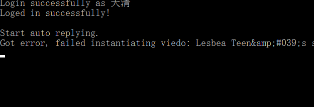先试验一下电台功能，完美
再试验一下浏览指定类别
 我们看到，一些视频的摘要被成功的返回了，但是有一些视频因为网络等因素出现了错误，根据我们的错误处理机制将traceback作为文本发送到了微信上。
我们看到，一些视频的摘要被成功的返回了，但是有一些视频因为网络等因素出现了错误，根据我们的错误处理机制将traceback作为文本发送到了微信上。
接下来根据给出的视频摘要，选择一个我们中意的视频，根据ID浏览指定视频：
完美！
至此，我们成功地搭建了一个私有的pornhub部分映像，并可以随时随地的开车，不，是收集鉴黄数据！
注：这个爬虫在设计上是多线程的，但是我用来爬取的ec2实例是单核的，所以多线程性能发挥不出来，而用本地pc访问pornhub速度又太慢。
这个爬虫应该是我做过的最好玩的一个Python程序了，我确实是希望把它用在正途用来收集鉴黄数据。但是这样收集正样本很容易，负样本哪里去找呢？这个还需要多学习。
来不及多说了！赶快上车吧！
git clone https://github.com/QuantumLiu/PornSpider.git
cd PornSpider
python wechat_client.py